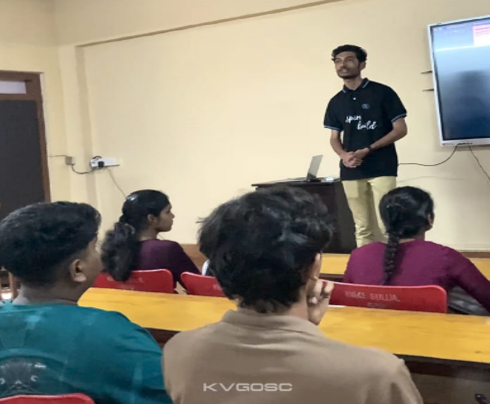
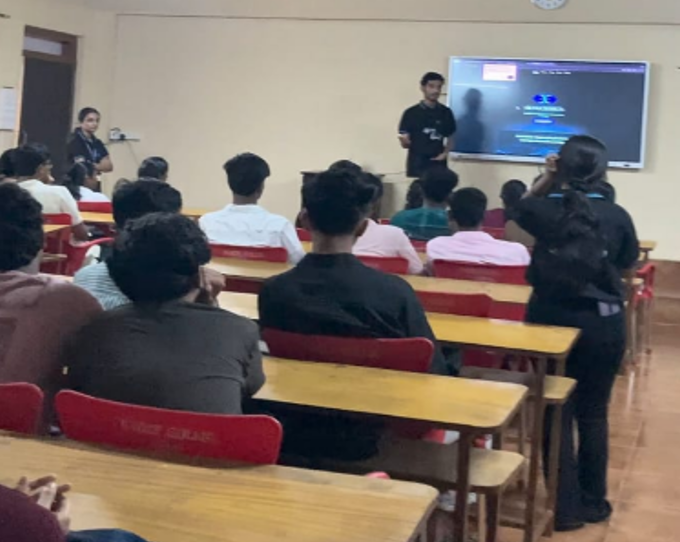

Student Induction Program (SIP) — Batch 2025
The KVG College of Engineering Open Source Community (KVGCEOSC) successfully organized the Student Induction Program (SIP) for the 1st-year Batch 2025 to introduce students to open-source culture, technical skills, and personal development. The program aimed to guide newcomers as they begin their engineering journey.
Overview of the Student Induction Program (SIP)
The SIP helped students adapt to college culture while learning essential technical and communication skills.
Program Goals:
- Introduce open-source culture.
- Provide basic technical training.
- Improve communication and confidence.
- Build awareness about career opportunities.

Activities and Sessions Conducted
- Introduction to KVGCEOSC — Students learned about what open source is, the founder’s aim, the community’s objectives, and its long-term vision of promoting a strong technical culture within the campus.
- Brainstorming Activity — Students participated in a creative activity to encourage teamwork, idea sharing, and problem-solving.
- GitHub Session — by Likhith: basics of GitHub, repository creation, and the importance of a technical portfolio.
- LinkedIn Session — by Abdul Hazeez: building a professional profile and networking.
- Quiz Session — by Sonika: interactive quiz to test general and technical knowledge.
- Fun Activities — by Chethan: tasks to boost communication, leadership, and confidence.
- Self-Introduction Training — by Likhith: presenting confidently in interviews and group sessions.
- Microsoft Ambassador Guidance — by Likhith (Microsoft Ambassador, 2023): guidance on applying for and benefiting from the Microsoft Learn Student Ambassador program.
- Google Ambassador Guidance — by Bhomika (2025): opportunities and responsibilities of becoming a Google Ambassador.

Outcomes of the SIP Program
- Improved understanding of open-source culture.
- Better communication and teamwork skills.
- Increased awareness of GitHub, LinkedIn, and career opportunities.
- Enhanced confidence among freshers.
Feedback and Response
Students appreciated the interactive format, hands-on training, and guidance from seniors.

Conclusion
The SIP for Batch 2025, conducted by KVGCEOSC, successfully introduced freshers to essential technical and personal development skills. The program built a strong foundation for their engineering journey, motivating them to participate actively in technical communities.